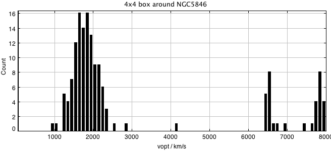
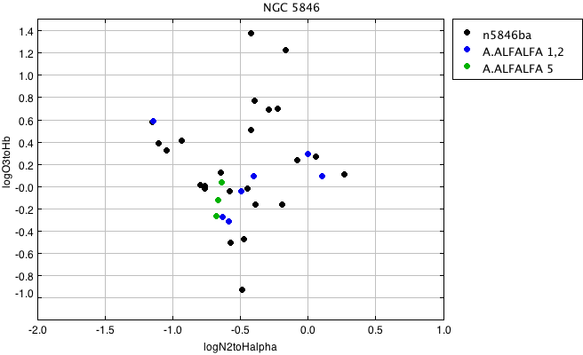

NGC 5846
RA,Dec RA,Dec(deg) R(2Mpc) nz nopt cz sig logsig sig logLx dist*
NGC 5846 NGC5846 1506293+013620 226.6221 1.60556 4.0 1749 42.28 ? (28)
Positions X-ray Luminosity from ACCEPT (Chandra)
Here are old for reference:
NGC 5846 NGC5846 1505320+014148 1749 2.51 42 26
X-ray luminosity from Boehringer et al. (2000) and velocity and dispersion from Mahdavi, Trentham, & Tully (2005)
Region contains compact NGC 5775 group
First, examine the broader velocity region in the box of 8 x 8

The group is isolated from surrounding structures, with peak between 1000 and 2500. With central velocity and velocity dispersion 1749 +/-322, 3sig=+/-966, 5sig=+/-1610. Defining sample, set velocity limits to be 700 < vhelio < 3000At this distance 2 Mpc = 4 degrees so box should be 8 x 8 centered on 224.42,+01.6 The box then should be 222.62-230.62 and -2.4-5.6 Note: AGC/ALFALFA may not be complete to -2.4 Use agc+nsa.v012.mags+lines.appmags+faceHalpha.csv make a subset with: vhelio > 700 & vhelio < 3000 RA > 222.62 & RA < 230.62 DEC > -2.4 & Dec < 5.6 ba90 > 0.4 So subset is: vhelio > 700 & vhelio < 3000 & RA > 222.62 & RA < 230.62 & DEC > -2.4 & Dec < 5.6 & ba90>0.4 Use agc+nsa.v012.mags+lines.appmags+faceHalpha.csv n5846.agc.nsa.faceHa N = 39 Use a57+agc+nsa.v012.mags+lines.appmags+faceHalpha.csv n5846.a57.nsa.faceHa N = 7 (Code 1,2) (N=3 for Code 5) Code 1,2 # AGCnr radeg decdeg vopt M_i BA90 g-i vhelio logN2/HA logO3/Hb v21 W50 sintp sn icode 9574 223.27167 3.33111 1567 -19.19 0.731 1.078 1563 -0.00 0.288 1576 206 12.18 68.9 1 *SF* 243026 224.69208 2.96889 1804 -16.21 0.929 0.426 1647 -1.14 0.583 1662 87 1.56 14.5 1 *SF* 241031 225.26291 0.7075 1756 -16.77 0.613 0.833 1724 -0.58 -0.323 1766 154 1.15 7.0 1 251419 226.03459 1.52444 1845 -16.58 0.616 0.636 1836 -0.63 -0.281 1854 21 0.28 4.9 2 *SF* 9715 226.78209 1.54389 2527 -21.74 0.739 1.319 2544 0.10 0.088 2556 201 14.08 74.9 1 *SF* 253770 228.13208 0.8125 1843 -16.42 0.568 0.757 1844 -0.49 -0.051 1898 227 0.85 4.6 2 *SF* 9787 228.92833 1.45528 1585 -16.65 0.683 0.677 1584 -0.40 0.088 1583 132 1.53 10.6 1 Code 5 253746 227.2679 0.82194 1643 -15.74 0.623 0.702 1645 -0.67 -0.274 1634 67 0.5 3.6 5 *SF* 253656 228.03416 1.58583 1958 -15.53 0.902 0.683 1941 -0.66 -0.129 1961 37 0.47 5.5 5 *SF* 733977 229.80542 2.54472 1883 -16.65 0.678 0.861 1877 -0.63 0.027 1887 120 0.41 3.2 5Now construct the BPT diagram of the two subsets:

Choose the subset which has logN2toHalpha < -0.5 : n5846.agc.nsa.faceHa.SF.csv N = 18, of which 15 are NOT in ALFALFA (Code 1,2) n5846.agc.nsa.faceHa.SF.notalfalfa.minus24.txt # AGCnr radeg decdeg NSAID ABSMAG_i g-i vhelio logN2toHalpha logO3toHb 9601 224.0071 -1.38833 171356 -18.255434 0.5835420000000013 1869.8133765952 -0.5776978758693039 -0.045806201154924765 242989 223.00792 2.97833 18369 -13.989683 0.26542899999999925 1814.1052476959999 -1.1060782200003059 0.3845820618542254 252565 226.675 0.63444 2750 -14.881292 0.5232244999999995 2260.3179389152 -1.6538294408722218 "" 253262 229.37291 3.58556 18647 -15.229079 0.6249570000000002 1882.9660910528 -0.7977217875240088 0.00755937527235732 253506 228.78917 2.75167 18665 -16.207996 0.7327950000000012 1763.6210243760002 -0.6438730621117178 0.12033780292343932 253624 225.31374 1.49833 15354 -15.558246 0.6589380000000009 2139.325305344 -0.5711170842231764 -0.5090785885485456 253667 228.1725 1.62333 15448 -15.503649 0.7407309999999985 1872.946322912 -0.7657153540706609 -0.023663431490795934 **Ha** 253739 226.67084 0.07667 2796 -14.681043 0.8145890000000016 1662.8321831232001 -1.1475865440258193 0.5720713284433963 254078 225.41083 1.87028 15405 -15.213312 0.7559369999999994 2152.263128896 -0.7596340721064526 0.002259510509238297 **Ha** 540166 225.005 -1.09056 35574 -16.677523 0.31754700000000113 1887.984189424 -0.9330101705658114 0.40537685887110153 **These two actually have SDSS absorption. Also note 253739 has very weak emission. Cut. 243532 224.58833 1.84556 15327 -17.377926 1.0371740000000003 1868.5586571376002 -0.920978099268278 "" 250073 226.64583 2.00472 15438 -18.06686 1.0832249999999988 1256.820849624 -1.0459426861213597 0.32068987150602574 That makes 10 SF targets from NSA. Recall: ALFALFA CODE 5 253746 227.2679 0.82194 2809 -15.746415 0.7020440000000008 1645.7962029312 -0.67545451839688 -0.2743371241602699 **Ha** 253656 228.03416 1.58583 15460 -15.531377 0.6831660000000017 1941.2279381456 -0.6628266775210003 -0.12940430646198683 **Ha** 733977 229.80542 2.54472 125163 -16.652403 0.86181399 1877.007005552 -0.634852899204682 0.027163084363757025 Becky's list of detected Ha includes 12, of which 2 are in NSA list, as marked. Two have ALFALFA Code 5, as marked. Of the remaining 9: 2 are apparent companions of AGC9715 (258549, 258550) - *cut* 2 are in the NSA file: # AGCnr radeg decdeg NSAID ABSMAG_i g-i vhelio logN2toHalpha logO3toHb 250103 227.02415 1.6514 15339 -17.457 1.09154 1831.8 -0.472 -0.4805 241018 225.06876 2.30056 with BA90<0.4 - *cut* One is Code 5 in A57.full: # AGCnr radeg decdeg v21 W50 sintp sn icode 250105 227.03876 1.60889 2122 32 0.33 4.4 5 3 more in AGC # AGCnr radeg decdeg vopt a b 9706 226.62 1.605 1709 3 3 filamentary (outflow?) 9655 225.297 1.702 1963 3.4 2.7 central/cont 252398 226.3697 1.2925 2296 0.33 0.22 So Becky's list goes from 12 to 9 (cutting 9715 companions and inclined galaxy). 2 are in NSA and 3 are in ALFALFA 5 sample. So that makes 9 + 8 additional NSA = 17. There is one additional ALFALFA code 5 for a total of 18 targets.
| Cluster/group | References |
|---|---|
| NGC 5846 |